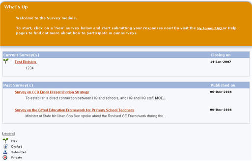
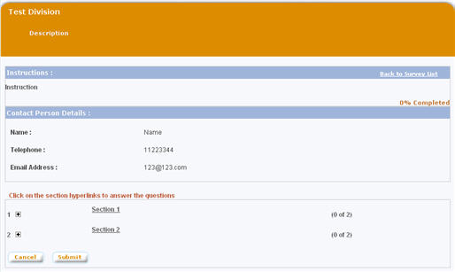
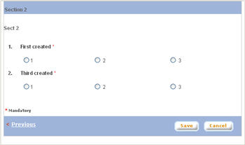

|
Survey
Surveys are conducted to get feedbacks on a particular subject in a structured manner.
a. Click on "Survey" tab on the top panel of the screen
b. The "Survey" main page is divided into 3 sections:
*
Announcement
*
Current Surveys
* Past Surveys

1. Participate in Survey
a. Click on the survey title on the Current Survey section
b. System will display the hierarchy of sections.

c. Click on a section to open questions under that section

d. Answer the questions. Questions marked
with * are mandatory. Click on "Save"
button to save answers and close the pop up window or click "<<
Previous" or "Next >>" button to go to previous or next section
respectively
e. Click on "Cancel" button to save the answers as draft. Answers saved as draft are not yet submitted and therefore still can be edited. Click on "Submit" button to submit answers. Once submitted, answers cannot be edited.
2. View Past Survey Summary
Once the period of a survey expired, administrators can publish the result and summary of the responses. Published surveys will be listed in the Past Surveys section in the "Survey" main page.
a. Click on the survey title on past survey section
b. The "Past Survey" page displays the details of the published survey
|